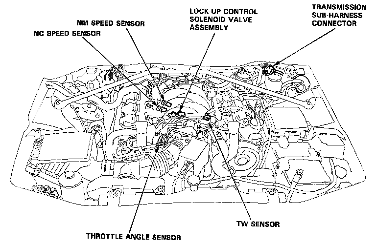
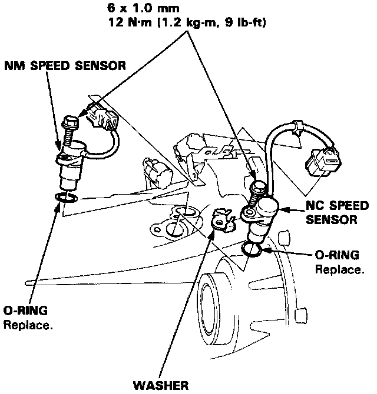

Operation CHARM
: Car repair manuals for everyone.
Home
>>
Acura
>>
1991
>>
Legend Sedan V6-3206cc 3.2L SOHC FI
>>
Repair and Diagnosis
>>
Transmission and Drivetrain
>>
Automatic Transmission/Transaxle
>>
Sensors and Switches - A/T
>>
Transmission Speed Sensor
>>
Locations
Transmission Speed Sensor: Locations

